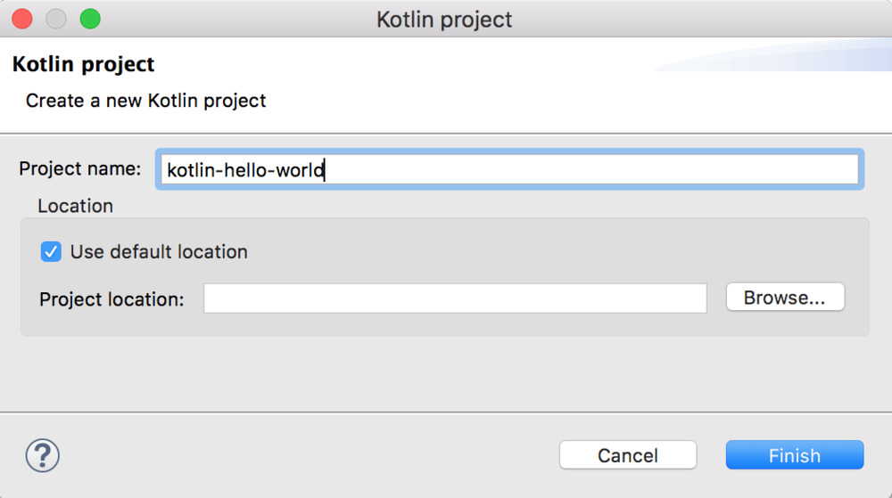

Overview,
Installation, and Setup
Kotlin is
a programming language developed by JetBrains, the
same company that has built world-class IDEs like IntelliJ
IDEA, PhpStorm, PyCharm, ReSharper etc.
It
runs on the Java Virtual Machine (JVM), and can also be compiled to JavaScript
and Machine Code.
In
this tutorial, Ill give you a brief overview of Kotlin and its features. Ill
also help you set up Kotlin in your system and prepare you for future tutorials.
Why
Kotlin?
In
todays world where we have a dozen programming language for every possible
task, following are few reasons to choose Kotlin as the primary language for
your next exciting project -
1.
Statically Typed
Kotlin
is a Statically typed programming language. This means
that the type of every variable and expression is known at compile time.
The
advantage with static typing is that the compiler can validate the methods
calls and property access on the objects at compile time itself and prevent
lots of trivial bugs that would otherwise crop up at runtime.
Although
Kotlin is a statically typed language, it doesnt require you to explicitly
specify the type of every variable you declare. Most of the time, Kotlin can
infer the type of a variable from the initializer expression or the surrounding
context. This is called Type Inference. Youll learn more about
Type inference in the Variables and Data Types tutorial.
2.
Concise
Kotlin
is concise. It drastically reduces the amount of boilerplate code that you have
been writing all the time in other OOP languages like Java.
It
provides rich idioms for performing common tasks. For example, You can create a
POJO class with getters, setters, equals(), hashCode() and toString() methods in a single
line -
data class
User(val name: String, val email: String, val country: String)
3.
Safe
Kotlin
is safe. It avoids the most dreaded and annoying NullPointerExceptions
by supporting nullability as part of its type
system.
It
works like this - Every variable in Kotlin is non-null by default:
String str = "Hello, World" // Non-null
type (can't hold null value)
str =
null //
Compiler Error
To
allow a variable to hold null value, you need to
explicitly declare it as nullable:
String nullableStr? = null // Nullable type (can be
null)
Since
Kotlin knows which variables are nullable and which are not, It can detect and disallow unsafe calls at compile time
itself that would otherwise result in a NullPointerException at runtime -
println(nullableStr.length()) //
Compiler Error
Kotlin
doesnt allow the method call length() on the nullableStr variable because the call is not safe and
may lead to NullPointerException.
However,
if you add a null check
then the method call is allowed -
if(nullablStr !=
null) {
println(nullableStr.length())
}
Notice
how Kotlin is enforcing developers to write safe code by distinguishing between
nullable and non-null types.
4.
Explicit
Kotlin
is Explicit. It will do/allow things only if you tell it to do so. Explicitness
is considered a good thing. Being explicit means being specific about your
design choices and not hiding anything from the readers or consumers of your
code.
Following
are few examples of Explicitness in Kotlin -
Kotlin
doesnt allow implicit type conversions, for example, int to long, or float to double. It provides methods
like toLong() and toDouble() to do so explicitly.
All
the classes in Kotlin are final (non-inheritable) by
default. You need to explicitly mark a class as open to allow other classes
to inherit from it. Similarly, All the properties and
member functions of a class are final by default. You need to
explicitly mark a function or property as open to allow child classes
to override it.
If
youre overriding a parent class function or property, then you need to
explicitly annotate it with the override modifier.
5.
Easy to learn.
Kotlin
has a very low learning curve. The basic syntax looks a lot like
Java. If you have a little experience in Java or any other OOP language then
youll be able to pick up Kotlin in a matter of hours.
6.
Functional and Object Oriented Capabilities
Kotlin
has both functional and object-oriented capabilities. It has a rich set of
features to support functional programming which includes functional types,
lambda expressions, data classes and much more.
7.
Completely interoperable with Java
Kotlin
is 100% interoperable with Java. You can easily access Java code from Kotlin
and vice versa. You can use Kotlin and Java in the same project without any
problem. This enables easy adoption of Kotlin into your existing Java projects.
8.
Excellent Tooling
Kotlin
has excellent tooling support. You can choose any Java IDE - IntelliJ IDEA, Eclipse, Android
Studio. All of them support Kotlin.
Moreover,
you can also download Kotlins standalone compiler
and run Kotlin code from the command line.
9.
Build Applications for Server Side, Android, Browser, and Desktop
You
can use Koltin to build applications for a wide range
of platforms including Server side, Android, Browser, and Desktop.
Android
has official support for Kotlin.
On
the server side, you can use Kotlin with the Spring
framework which has added full support for Kotlin in Spring version 5.
Kotlin
can be compiled to JavaScript and Machine code as well.
10.
Free and Open Source
Kotlin
programming language, including the compiler, libraries and all the tooling is
completely free and open source. It is available under Apache 2 license and the
complete project is hosted on Github - https://github.com/sambhaji213
Setup
Kotlin
You
can set up and run Kotlin programs in several ways. You can either install kotlins compiler and run Kotlin programs from the command
line or install and setup Kotlin in an IDE like IntelliJ
or Eclipse -
Install
Kotlins Standalone Compiler
Setup
Kotlin in IntelliJ IDEA
Setup
Kotlin in Eclipse
Installing
the Standalone Compiler
Follow
the steps below to install Kotlins compiler -
1.
Go
to Kotlin releases page on Github
2.
Download
Kotlins compiler in the form of a zip file from the
Assets section on the Github releases page. The
latest version of Kotlin compiler at the time of writing this page is 1.2.10
3.
Unzip
the downloaded kotlin-compiler-x.x.x.zip file and store the unzipped folder in a
location where you have write access.
4.
Add path-to-unzipped-folder/bin to your PATH variable.
5.
Verify
the installation by typing kotlinc in the command line -
$ kotlinc
Welcome to Kotlin version 1.2.10 (JRE 1.8.0_112-b16)
Type :help for
help, :quit for quit
>>>
Run
your first Kotlin program from the command line
Open
your favorite editor and create a new file called hello.kt with the following contents -
fun main(args: Array<String>) {
println("Hello,
World!")
}
Save
the file and type the following commands to compile and run the program
$ kotlinc
hello.kt
$ kotlin
HelloKt
Hello, World
Setting
up Kotlin in IntelliJ IDEA
Install
the latest version of IntelliJ IDEA. Kotlin
comes bundled with the recent versions of IntelliJ.
You wont need to install any plug-in separately to run Kotlin programs.
Follow
these steps to create and run a new Kotlin project in IntelliJ
1.
Create
a new project by selecting Create New Project on the welcome screen or go
to File
→ New → Project.
Select Kotlin on the left side menu
and Kotlin/JVM from the options on the right side -
2.
Specify
the projects name and location, and select a Java version (1.6+) in the
Project SDK. Once all the details are entered, click Finish to create the project -
The generated project will
look like this -
3.
Lets
now create a new Kotlin file. Right click on src folder → New →
Kotlin File/Class.
A prompt will appear where
youll need to provide a name for the file. Lets name it HelloWorld.
4.
Now
lets write a simple hello world program in the new file that we have created.
Add the following main() function to the HelloWorld.kt file -
5.
Finally,
You can run the program by clicking the Kotlin icon that appears
beside the main()method -
You
can also run the program by Right Clicking the HelloWorld.kt file and
selecting Run 'HelloWorldKt'.
Setting
up Kotlin in Eclipse
I
assume that you have Eclipse installed on your system. If not, download the
eclipse installer from Eclipse Downloads page, and install
Eclipse IDE for Java Developers.
Once
Eclipse is installed, follow the steps below to setup and run Kotlin in Eclipse
-
1.
Install
Kotlin Plugin from Eclipse Marketplace: Go to Help
→ Eclipse Marketplace, and search for Kotlin.
Click install to install the
plugin.
2.
You
will need to restart eclipse once the installation is finished.
3.
Lets
verify the plugins installation switching to Kotlin perspective in eclipse. Go
to Window → Perspective → Open Perspective →
Other. A
window will open which will show Kotlin as a new perspective.
Select Kotlin and click Open to open Kotlin
perspective -

4.
Lets
now create a new project. Select File → New →
Kotlin Project.
Enter the projects name and click finish -

5.
A new
project will be created which will look like this -
6.
Lets
now create a new Kotlin file under the src folder. Right
click src folder → New → Kotlin File -
7.
First,
add the following code in the HelloWorld.kt file, and then
right-click anywhere on the source file and click Run As
→ Kotlin Application to run the application -